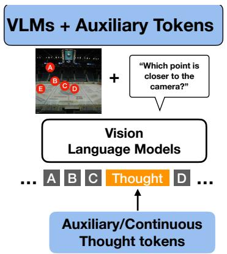

今日主线 · TMLR 2026
TextTeacher：冻结文本编码器可以作为训练期语义锚点，推理时仍保留纯视觉模型
冻结文本编码器可以作为训练期语义锚点，推理时仍保留纯视觉模型。

冻结文本编码器可以作为训练期语义锚点，推理时仍保留纯视觉模型。
P1
今天最值得先读：它不是完整 CLIP 式预训练，而是把语言语义变成低成本的视觉表征塑形目标。
方法：frozen text encoder semantic anchors for image representation training
 P1
P1
适合关注多模态预训练数据效率的人精读：它把合成图文对放进分布匹配和对齐保持问题里。
方法：geometric multimodal distribution matching for image-text dataset distillation
 P2
P2
它把视频自监督和 Video-LLM 后训练接起来，值得和 V-JEPA、视频掩码建模放在一起看。
方法：temporal-aware questioner reward and temporal-grounded solver reward

P2这是一个诊断工具型论文：以后看 latent visual token 方法时，应该要求内容替换消融。
方法：token replacement test for continuous and discrete visual thought tokens
 P3
P3
偏理论和监督表征，但对理解 linear probe、原型、均匀性和表征几何有参考价值。
方法：prototype contrast with NTCE / NONL objectives on the hypersphere